原视频：Bilibili · BV1QFQmB7EQD 课程：NJU《操作系统原理》2026 第 7 讲 整理说明：本书由视频语音转录后经 AI 重构而成，口语已转写为书面语；关键时间点均标注 (参考时间)，截图卡片可跳转视频对应位置。
1. 从实验与对象说起
(参考时间: 00:00)
课程实验已发布；代码可用 AI 辅助获取与阅读。若老师说「某日更新了 main 分支」，即使你不熟 Git，也可以让 agent：查看提交历史 → git fetch → 合并远程更新。短时间内就能学会 git log、reset、fetch、merge 等命令的概念。
上讲已覆盖：fork / execve / exit 管理进程状态；mmap / munmap / mprotect 管理地址空间。进程之间若要交换数据（例如 128 个进程各算一个数再求和），光靠复制进程状态不够——需要操作系统里共享的对象。
本讲主题：操作系统中的对象，以及管理它们的 API。
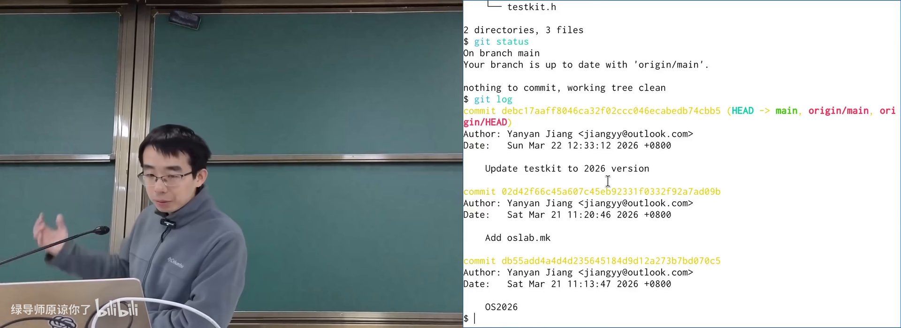
实验代码与 Git 更新在 B 站打开 (00:03:20)
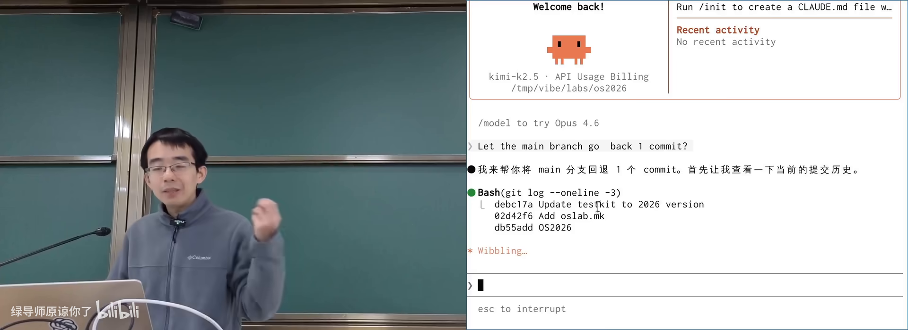
AI 帮你同步远程 main 分支在 B 站打开 (00:04:00)
2. UNIX 与 Windows：两种 API 哲学
(参考时间: 00:10)
应用开发者想做的事很具体：读 /proc/1234/maps、改另一个进程的内存、发网络请求。操作系统设计者则提供通用机制：简单、稳定、可支撑整个生态的 API。
两种路线
| UNIX / Linux | Windows | |
|---|---|---|
| 理念 | 把对象暴露成文件，用小工具组合 | 开发者要什么就提供什么 API |
| 查进程内存 | 读 /proc/<pid>/maps（文本） |
OpenProcess + ReadProcessMemory / VirtualQueryEx |
| 性能 | 文本序列化/解析有开销 | 直接传参进内核，更高效 |
| 用户假设 | hacker / power user | 软件开发者 |
UNIX 选择 everything is a file（一切皆文件）：进程信息、设备、管道都伪装成文件，复用 open/read/write/readdir。
Windows 更像软件工程产品：功能对应明确 API，句柄（handle）里还带权限信息。
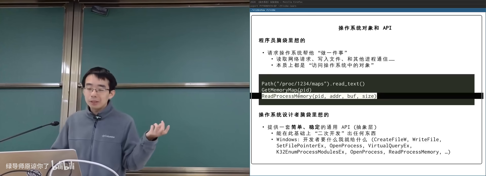
UNIX vs Windows：对象如何暴露在 B 站打开 (00:14:00)
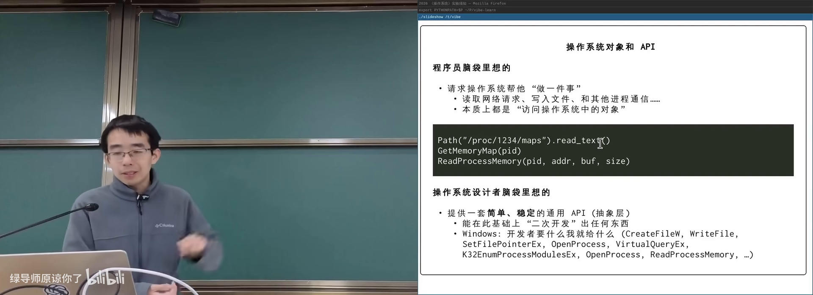
Linux 系统调用列表：历史层层叠加在 B 站打开 (00:13:00)
3. 一切皆文件：文件作为抽象
(参考时间: 00:17)
文件（有名字的数据对象） 的经典模型是字节序列（一串可按顺序读写的字节）。它足够朴实，几乎能表示一切：
- 键盘输入流；
- 图片、JSON、数据结构数组；
- 网页 HTML（含头部 + 空行 + 正文）；
- 打印机、终端、显卡；
- 锁、管道。
只要都是文件，就能用同一套工具（cat、wc、grep…）处理。UNIX 的设计准则是：把操作系统对象暴露出来，再给一组可组合的工具。
文件系统可构建信息系统
课程提交系统将每个学生的作业存成目录里的文件；评测器扫描目录生成 result 文件。批量 rejudge 只需 find + 删除 result，不必在数据库产品里实现专用后台。
代价是一致性较弱（写多个文件时崩溃可能留下中间状态）；换来的是极强的可组合性，AI agent 也能直接改目录。
flowchart LR
A[浏览器提交 zip] --> B[后端写入<br>receive/作业/日期文件]
B --> C[Online Judge 扫描目录]
C --> D[生成 result 文件]
D --> E[网页读取结果]
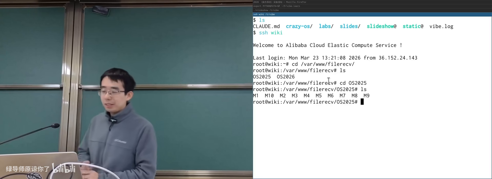
课程 OJ：文件系统作为后端在 B 站打开 (00:24:00)
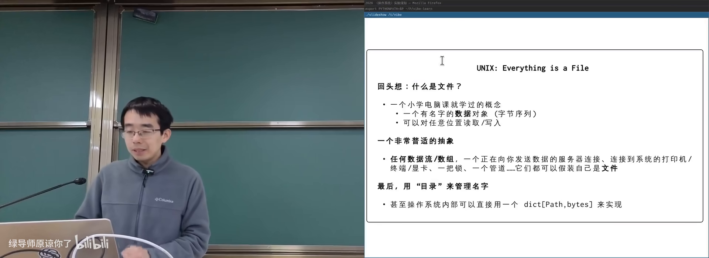
everything is a file：字节序列表示一切在 B 站打开 (00:17:50)
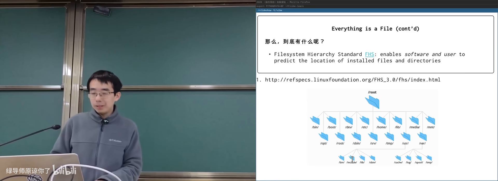
FHS：Linux 目录层次标准在 B 站打开 (00:30:50)
UNIX 哲学要点
- 每个工具只做一件事并做好；
- 工具可组合；
- 文本流作为通用接口（人可读、机器可读）。
1970 年代用性能换可组合性是勇敢的取舍；今天文本接口对大模型格外友好。命令行是自然语言与编程语言之间的平衡点——quick and dirty，但高效。
文本接口的代价：空格分隔会把带空格的文件名拆成两个参数；make 至今对空格支持不佳。
4. 打开的文件与文件描述符
(参考时间: 00:42)
在教学用 CrazyOS 里，putchar 的实现往往就是往进程的一个 buffer 写字符——这其实就是「打开的文件」。
操作系统内部的典型结构：
- 进程持有若干打开的文件对象：指针指向 OS 里的文件/设备 + 当前读写位置 offset；
- 文件系统里则是「路径 → 字节序列」的映射。
文件描述符
应用程序的地址空间里只有普通内存；OS 内核里的「打开的文件表」不能用指针直接访问。UNIX 的办法：
文件描述符（file descriptor，进程用来引用操作系统对象的小整数，从 0 开始编号）
0, 1, 2惯例为标准输入、标准输出、标准错误；open从最小的未用编号开始分配（常为 3）；read/write/lseek/close/dup都以该整数为句柄。
因为 everything is a file，它实际上是 everything descriptor（一切对象描述符）。
Windows 中类似概念叫 handle（句柄/把柄，抓住它就能操作那个对象）。任务管理器里的「句柄」即此；中文译名来自早期编译教材的误译并沿用至今。
flowchart LR
P[进程用户态] -->|fd=3| T[进程打开文件表]
T --> O[内核 file 对象<br>指针+offset]
O --> F[文件/终端/管道...]
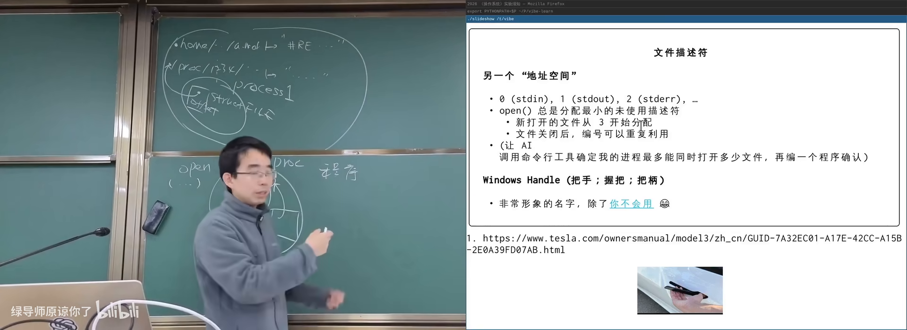
文件描述符：0/1/2 与后续分配在 B 站打开 (00:49:00)
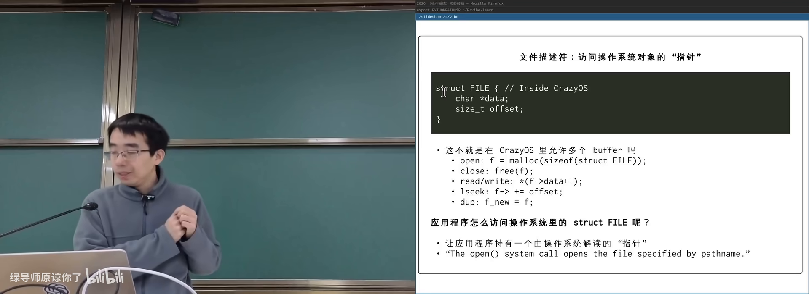
内核中的打开文件对象与 offset在 B 站打开 (00:44:30)
lseek 与 dup
lseek：重定位读写 offset（从头/当前位置/末尾）；dup：再创建一个描述符指向同一个打开文件对象。
打开失败时返回负数，可用 perror 按系统语言打印原因（如 No such file or directory）。
5. fork 与文件 offset 的共享语义
(参考时间: 00:59)
假设 log.txt 被进程打开为 fd=3，写 1 后 offset 后移。此时 fork：
- 方案 A：父子各有一份独立的打开文件结构与 offset → 可能都写在位置 0，互相覆盖；
- 方案 B：父子共享同一打开文件对象与 offset → 依次写
1、2，日志追加不丢。
UNIX 选择方案 B（浅拷贝）：希望父子共享文件追加时不覆盖。若需要独立 offset，应再次 open。
Windows handle 默认不继承，符合最小权限；UNIX 默认继承，后来才补充 O_CLOEXEC（执行 execve 时关闭描述符），避免子进程意外获得敏感文件访问权。
这说明：fork 看起来只是「复制」，实际上要与几乎每一种操作系统对象约定复制语义；设计系统时处处要考虑交互。有论文（A Fork in the Road）甚至主张不要继续以 fork 为中心教学。
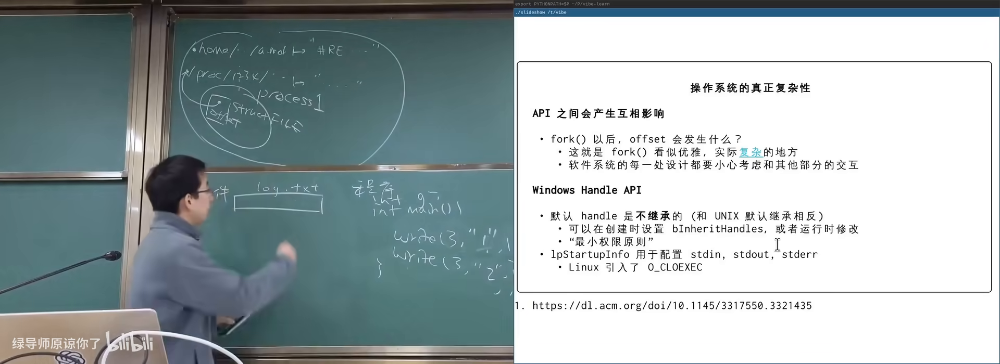
fork 后共享 offset：日志追加在 B 站打开 (01:00:00)
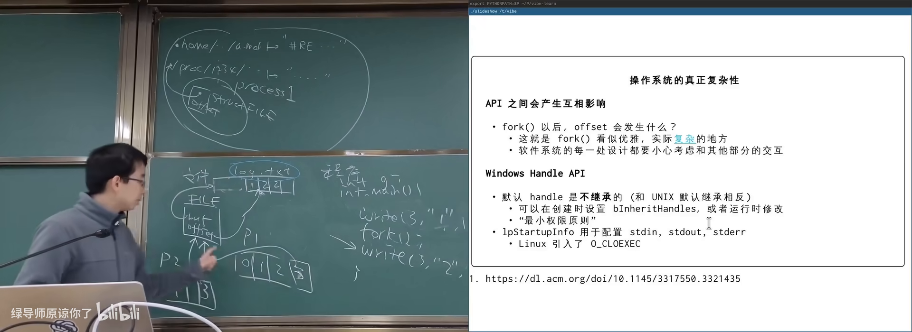
Windows 句柄 vs UNIX fd 继承策略在 B 站打开 (01:05:00)
6. 在文件系统里看见一切
(参考时间: 01:07)
因为一切皆文件，可以枚举：
ls -l /proc/*/fd/*
每个进程打开的文件描述符都出现在 /proc/<pid>/fd/ 下，符号链接指向真实对象：终端 /dev/pts/N、管道 pipe:[inode]、普通文件路径等。
主讲人将清洗后的列表管道给 coding agent 解释，或直接演示：向某人的伪终端设备 write，对方屏幕上就会出现字符——权限允许时，终端也只是文件。
启发
- 计算机世界没有魔法，都有干净解释；
- 想知道系统在干什么，文件系统往往是入口；
- 文本 + 管道 + AI，极大降低观察内核状态的成本。
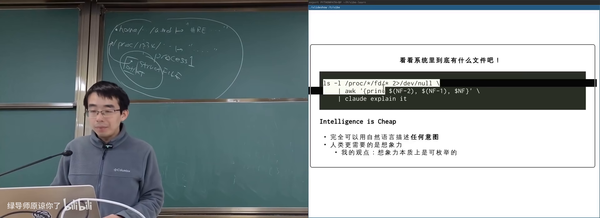
proc 下的 fd：谁打开了什么在 B 站打开 (01:07:40)
附录：概念补给
文件描述符（fd）
- 是什么：进程引用 OS 对象的小整数，从 0 起编号。
- 课上为何出现：用户态无法拿内核指针，需要间接编号。
- 常见误解：它不只是「磁盘文件编号」，终端、管道也是 fd。
句柄（Handle）
- 是什么：Windows 中指向系统对象的引用，常含权限信息。
- 课上为何出现：与 UNIX fd 对比；任务管理器中的「句柄」。
- 和什么像：门把手/把柄——抓住它才能开关这扇门。
一切皆文件（Everything is a File）
- 是什么：把 OS 对象统一成可读写的字节序列接口。
- 课上为何出现：UNIX API 哲学；一套工具处理一切。
- 常见误解：不是所有对象都存在磁盘上，设备/proc 是虚拟文件。
字节序列
- 是什么：按顺序排列的字节，文件的经典抽象。
- 课上为何出现：几乎能表示流、数组、网页、设备数据。
- 和什么像：无限长的纸带，上面写满字节。
offset（文件读写位置）
- 是什么：打开文件对象中「当前读到/写到哪」的指针。
- 课上为何出现：
read/write/lseek的核心状态。 - 常见误解：offset 属于「打开的文件对象」，不是磁盘上的文件本身。
open / read / write / lseek / close
- 是什么：访问文件对象的基本系统调用族。
- 课上为何出现：UNIX 提供的最小通用 API。
- 和什么像：开门 → 读写 → 关门；lseek 是翻页。
dup（描述符复制）
- 是什么：创建新的文件描述符，指向同一打开文件对象。
- 课上为何出现：管道、重定向、继承场景的基础。
- 常见误解：dup 通常共享 offset，不是复制文件内容。
浅拷贝 vs 深拷贝
- 是什么：浅拷贝共享子对象；深拷贝整棵结构复制。
- 课上为何出现：fork 后文件 offset 是共享还是独立的设计选择。
- 和什么像：复印通讯录条目 vs 把整本通讯录重抄一份。
O_CLOEXEC
- 是什么：标志位，使文件描述符在 execve 时自动关闭。
- 课上为何出现：修补 UNIX 默认继承带来的敏感 fd 泄露。
- 和什么像：搬家时自动不带上的钥匙。
procfs
- 是什么：以文件树暴露进程与内核信息的虚拟文件系统。
- 课上为何出现：
/proc/<pid>/fd、maps、mem等观察入口。 - 常见误解：其中多数文件不占用磁盘空间。
UNIX 哲学 / KISS
- 是什么：工具做一件事、可组合、文本作通用接口。
- 课上为何出现：解释为何用目录而不是专用数据库也能搭系统。
- 常见误解：文本接口不是「落后」，而是可组合性的代价与收益。
perror
- 是什么：按当前 locale 打印最近一次失败原因的库函数。
- 课上为何出现：open 失败时解释「为什么」。
- 和什么像：客服根据错误码念出人话说明。
书架 Shelf 流水线生成 · 内容衍生自 B 站公开课程视频 BV1QFQmB7EQD